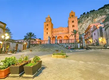
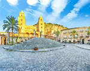
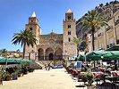
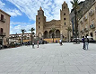

Questa piazza non è soltanto uno spazio fisico, ma un vero e proprio palcoscenico dove storia, arte e vita quotidiana si fondono in un'armonia senza tempo. È qui che batte il cuore di Cefalù, un centro nevralgico riconosciuto come Patrimonio dell'Umanità UNESCO,che attrae visitatori da ogni angolo del mondo.

Dalle processioni religiose alle vivaci serate estive, la piazza è il punto d'incontro per residenti e turisti, un luogo dove ogni sguardo scopre un dettaglio nuovo, ogni passo rivela un frammento di un passato glorioso e di un presente vibrante.
Galleria foto

